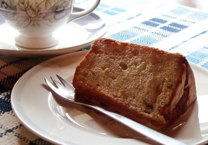
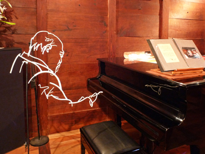
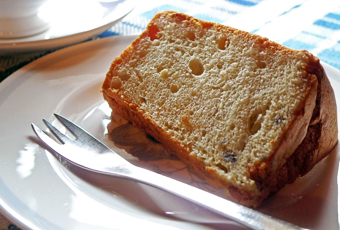
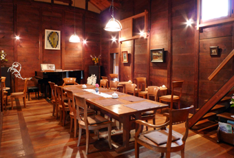

SHOP INFORMATION夢空間はしまや
米蔵のギャラリーカフェ

町家や土蔵を改装した住居やお店が立ち並ぶ本町を抜けて、東町に入ったところにある建物は、平成8年に「文化財登録原簿」に岡山県第1号として登録された有形文化財「楠戸家住宅」です。
そこには明治2年創業の呉服店があり、その脇の長い路地を入って突き当たりに、米蔵を改装したギャラリーカフェ「夢空間はしまや」があります。
芸術的な空間

お茶を飲みながら楽しく過ごせる場を色々な人と共有したい、というオーナーの夢を実現した空間です。
カフェの隣にはギャラリー専用のスペースが設けられ、国内外の作家が作品を展示しています。店内には、鉄筋彫刻家の徳持耕一郎さんのオブジェや、ギャラリーを利用した作家の作品が飾られています。
ジャズやギターの弾き語りなど色々なジャンルのコンサートを開催することもあります。
おすすめメニュー
「本当においしい」と太鼓判を押すコーヒーは、オーナーの知人でもある「萩原珈琲」のもの。
じっくり丁寧に炭火で焙煎されたコーヒーは、まろやかで後味も良く、冷めても美味しくいただけます。コーヒー豆の販売もしているので、お土産などに買って帰るのもいいですね。このコーヒーを使用して作られたコーヒーゼリーも、オーナー自慢の一品。使用している器は、倉敷ガラスの作家小谷真三さんの弟子である石川昌浩さんの作品です。
ケーキもおすすめ

コーヒーの他には、羊羹付きの抹茶やケーキなどがあります。ケーキは、えびす商店街にある手作り焼菓子のお店「木鳩屋」のもので、シフォンケーキや焼菓子などが味わえます。コーヒーとの相性も良いです。
倉敷散策の途中にぜひ立ち寄って

2階にもゆっくりとくつろげる空間があります。
読書をする人もいれば、手紙を書く人もいるそうです。
落ち着ける空間作りを心がけているという「夢空間はしまや」では、伝統的な建築を体全体で感じることができ、美味しい珈琲が味わえ、そして時には音楽やアートを楽しむことができます。
美観地区内なので、倉敷めぐりを楽しむ途中に足を運んでみてはいかがですか。
Googleマップでみる
一覧に戻る